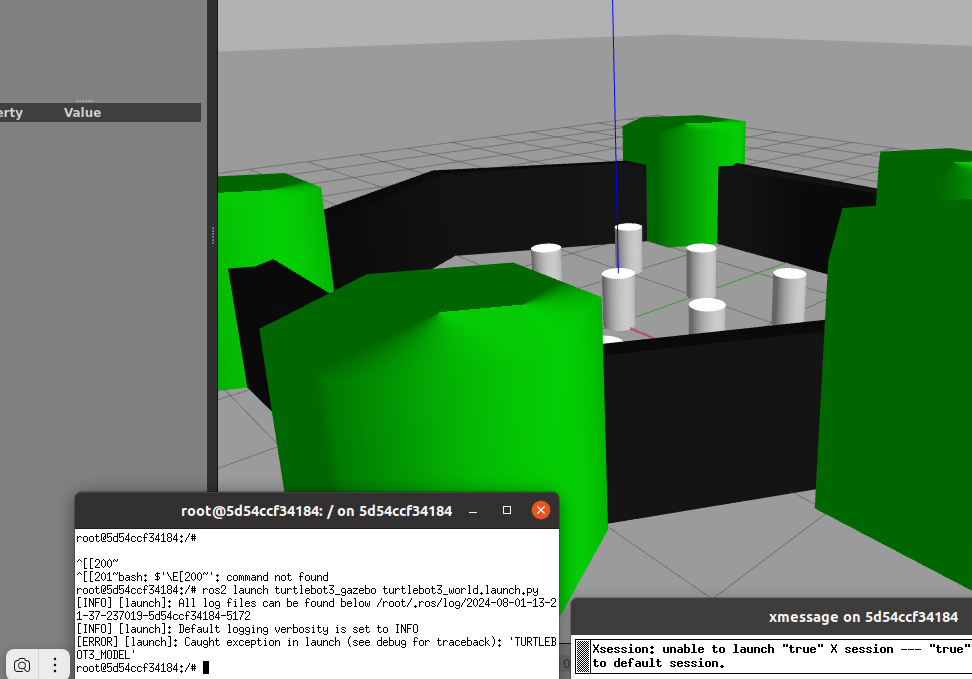

sudo apt-get update
sudo apt-get install ca-certificates curl
sudo install -m 0755 -d /etc/apt/keyrings
sudo curl -fsSL https://download.docker.com/linux/ubuntu/gpg -o /etc/apt/keyrings/docker.asc
sudo chmod a+r /etc/apt/keyrings/docker.asc
echo \
sudo apt-get update
"deb [arch=$(dpkg --print-architecture) signed-by=/etc/apt/keyrings/docker.asc] https://download.docker.com/linux/ubuntu \
$(. /etc/os-release && echo "$VERSION_CODENAME") stable" | \
sudo tee /etc/apt/sources.list.d/docker.list > /dev/null
sudo apt-get install docker-ce docker-ce-cli containerd.io docker-buildx-plugin docker-compose-plugin
Проверим успешность установки:
sudo docker run hello-world
Выполнив эту команду, увидим подтверждение успешной установки и запуска Docker Engine.
Удаление Docker Engine
- Uninstall the Docker Engine, CLI, containerd, and Docker Compose packages:
sudo apt-get purge docker-ce docker-ce-cli containerd.io docker-buildx-plugin docker-compose-plugin docker-ce-rootless-extras
- Images, containers, volumes, or custom configuration files on your host aren't automatically removed. To delete all images, containers, and volumes:
sudo rm -rf /var/lib/docker
sudo rm -rf /var/lib/containerd
Постустановочные шаги для Docker Engine на Linux
По умолчанию демон Docker привязан к Unix-сокету, которым владеет пользователь root, а не к TCP-порту. Другие пользователи могут получить доступ к нему только через команду sudo. Чтобы не использовать команду docker с префиксом sudo, создайте Unix-группу с именем docker и добавьте в неё пользователей.sudo groupadd docker
Добавление пользователя в созданную группу:
sudo usermod -aG docker $USER
Выйдите из системы и войдите снова, чтобы изменения вступили в силу. Также можно активировать изменения группы с помощью:
newgrp docker
Проверим что работает без sudo: docker run hello-worldЕсли возникают проблемы с правами доступа из-за применения sudo, исправьте это:
sudo chown "$USER":"$USER" /home/"$USER"/.docker -R
sudo chmod g+rwx "$HOME/.docker" -R
Включить автозапуск:
sudo systemctl enable docker.service
sudo systemctl enable containerd.service
sudo systemctl disable docker.service
sudo systemctl disable containerd.service
Настройка драйвера журналирования по умолчанию
Docker предоставляет драйверы для сбора и просмотра логов со всех контейнеров. По умолчанию используется драйвер json-file. Чтобы диск не переполнился логами, стоит настроить их ротацию. Также можно использовать другой драйвер, который автоматически ротирует логи или отправляет их на удалённый сервер. Подробнее об этом вы можете узнать в документации.To avoid issues with overusing disk for log data, consider one of the following options:
- Configure the json-file logging driver to turn on log rotation.
- Use an alternative logging driver such as the "local" logging driver that performs log rotation by default.
- Use a logging driver that sends logs to a remote logging aggregator.
Установка Docker Compose
Можете ознакомиться с установкой подробнее в документации на GitHub или здесь и не только установка.Выбираем релиз на этой странице Запустить команду, чтобы загрузить последнюю версию и сохранить исполняемый файл в /usr/local/bin/docker-compose (вместо v2.27.1 пишем номер версии, какая сейчас последняя):
sudo curl -L "https://github.com/docker/compose/releases/download/v2.27.1/docker-compose-$(uname -s)-$(uname -m)" -o /usr/local/bin/docker-compose
Другой способ: на странице релизов нажимаем на Tags. Далее на нужном релизе нажимаем на Downloads. Копируем путь и вставляем в команду между кавычками:
sudo curl -L "https://github.com/docker/compose/releases/download/v2.27.2/docker-compose-linux-x86_64" -o /usr/local/bin/docker-compose
Установите права на исполнение для файла docker-compose:
sudo chmod +x /usr/local/bin/docker-compose
чтобы проверить версию Docker Compose:
docker-compose --version или docker-compose version
Урок 5.4 Создание контейнеров и управление ими с помощью Docker
Для начала скачаем какой-нибудь образ, например на базе ROS2:docker pull osrf/ros:humble-desktop
Запустим контейнер в интерактивном режиме на базе этого образа:
docker run -it osrf/ros:humble-desktop /bin/bash
Теперь настроим наши переменные окружения в контейнере, чтобы выполнять команды:
source /opt/ros/humble/setup.bash
Далее в контейнере выполнил команду gazebo, получил ответ: bash: gazebo: command not found
Далее я сам по руководству, прикладываему к этому видеоуроку, выполнил команды в контейнере:
apt update
apt install xpra xterm net-tools nano
apt install ros-$ROS_DISTRO-turtlebot3*
source /opt/ros/$ROS_DISTRO/setup.bash
Устанавливаем дополнительный пакет ROS2:
sudo apt install ros-humble-rmw-cyclonedds-cpp
export RMW_IMPLEMENTATION=rmw_cyclonedds_cpp
Используйте Xpra, чтобы создать графическую сессию:
xpra start --start=xterm --bind-tcp=0.0.0.0:9009
Пожаловался: No module named 'pyinotify'
Но в общем то запустился.
На хосте:
xpra attach ws://172.17.0.2:9009
Далее в контейнере выполнил команду gazebo. Результат:

И почему-то открылись окна xterm и xpra.
Выполнил сначало в контейнере запуск ланч.файла:
ros2 launch turtlebot3_gazebo turtlebot3_world.launch.py
Ответ:
Потом в xterm, как и написано в учебном руководстве выполнил эту команду (вставка осуществляется средней клавишей мыши):
ros2 launch turtlebot3_gazebo turtlebot3_world.launch.py
Сначало в xterm был получен такой же ответ, как и в терминале контейнера, но через пару минут открылся все-же Gazebo

Сохранение изменений контейнера в новый образ
Cоздайте новый образ на основе этого контейнера:docker commit <id_контейнера> custom_ros_image:configured
Вместо <id_контейнера> нужно указать ID вашего контейнера, который выдаёт команда docker ps.
Теперь у вас есть новый образ custom_ros_image:configured с изменениями и установками из контейнера. Используйте его в следующем запуске, чтобы не вносить изменения заново.
Чтобы запустить контейнер из нового образа, используйте:
docker run -it custom_ros_image:configured
Команды Docker
Шпаргалка по DockerЗапуск контейнера Docker
Большая шпаргалка по Docker: как распилить монолитный проект на части
Основные команды Docker
Команда создания образа: docker build:
Контекст сборки — это множество файлов, расположенных по адресу PATH или URL, указанному в качестве позиционного аргумента команды сборки:docker build [OPTIONS] PATH | URL | -
Если образ создаётся командой docker-compose up , то контекст сборки будет равен параметру Context в файле docker- compose.yml. Обычно контекст равен каталогу, где находится Dockerfile, но нужно иметь в виду, что файлы из инструкций COPY, ADD должны входить в контекст сборки.
Все команды выполняются в хосте.
Сборка образа с помощью Dockerfile:
docker build -t name_image .
Здесь name_image - имя создаваемого образаТочка означает, что dockerfile, на основе которого собираем образ, находится в текущем каталоге. Если этот файл находится в каком-то другом месте, его расположение можно указать с использованием флага - f:
docker build -t name_image -f path_to_image .
Несмотря на то, что пишем путь к образу, все равно нужно в конце после путь пробел, поставить точку.
Команда запуска контейнера: docker run
docker run [OPTIONS] IMAGE|ID [COMMAND] [ARG...]
- IMAGE — имя образа, на основе которого создают контейнер. Вместо имени образа можно указать ID контейнера.
- COMMAND — команда.
- ARG — аргументы команды, которые будут выполнены в контейнере. Если они не указаны, по умолчанию действует
команда из Dockerfile.
- -d, --detach запускает контейнер в фоновом режиме.
- --name присваивает имя контейнеру.
- -p, --publish переводит порты из контейнера на хост-машину. Формат: <порт на хосте>:<порт в контейнере>.
- -v, --volume монтирует том или папку хоста в контейнер.
- -e, --env устанавливает переменные окружения в контейнере.
- --rm автоматически удаляет контейнер при его завершении.
- --network задаёт сетевой режим для контейнера. Например, --network host использует сеть хоста.
- --privileged запускает контейнер в привилегированном режиме, что позволяет контейнеру иметь все преимущества хоста.
Запустить контейнер из образа name_image в интерактивном режиме:
docker run -it name_image
Войти в запущенный контейнер:
docker exec -it <id_контейнера> <command>
id контейнера можно увидеть командой: docker ps
docker commit <id_контейнераgt> name_image:tag
Удалить образ:
docker rmi <имя_образа или id_образа>
Остановка контейнера
Синтаксис:docker stop [опции] название или ID контейнера
Просмотр и удаление всех контейнеров:
docker ps - список всех запущенных контейнеровdocker ps -a - список всех в том числе и остановленных контейнеров.
docker rm $(docker ps -a -q) - удалить все остановленные контейнеры
Важно помнить, что перед удалением контейнер должен быть остановлен. Для этого вы можете использовать следующую команду: docker stop
При попытке удалить работающий контейнер, Docker выдаст ошибку.
Если вы хотите удалить работающий контейнер, вы можете использовать опцию -f (force):
docker rm -f [имя_контейнера или ID]Эта команда самостоятельно остановит и удалит контейнер, даже если он в данный момент активен.
Удаление всех остановленных контейнеров
Вы также можете удалить все остановленные контейнеры. Это полезно для очистки системы от неиспользуемых контейнеров.
Пример команды:
docker container pruneПеред выполнением этой команды Docker запросит подтверждение, чтобы предотвратить случайное удаление контейнеров.
Монтирование папки или тома
1. Монтирование папкиКогда вы запускаете контейнер, можно вмонтировать в него папку (или файл) с хоста. Так контейнер получит доступ к файлам и сможет сохранять данные на хосте. Представьте, что на компьютере есть папка /host_folder . Чтобы она была доступна внутри контейнера по пути /app/data, необходимо использовать такой метод:
docker run -v /host_folder:/app/data <имя_образа>
Теперь любые изменения в /app/data внутри контейнера появятся в /home/user/data на вашем хосте и наоборот.
2. Создание тома
Том в Docker позволяет постоянно хранить данные за пределами контейнера и использовать их в разных контейнерах.
Создать новый том:
docker volume create myvolume
Теперь у вас есть том myvolume, который можно монтировать в контейнеры.
3. Монтирование тома в контейнер
Если нужно вмонтировать созданный том myvolume в папку /app/data внутри контейнера, используйте следующую команду:
docker run -v myvolume:/app/data <имя_образа>
Чтобы посмотреть список томов: docker volume ls
Подробная информация о томе: docker volume inspect name_volume
Удалит все тома, которые не используются контейнерами:
docker volume prune
Удалит один том:
docker volume rm
Проброс портов и устройств
1. Запуск с пробросом порта:Представьте, что в вашем контейнере есть веб-приложение, которое слушает порт 8080. Чтобы оно было доступным на порту 8000 вашего хоста, используйте:
docker run -p 8000:8080 <имя_образа>
2. Запуск с пробросом устройства:
Представьте, что вы хотите использовать USB-устройство внутри контейнера. Чтобы применить то же имя устройства /dev/ttyUSB0 на хосте внутри контейнера, введите следующую команду:
docker run --device /dev/ttyUSB0:/dev/ttyUSB0 <имя_образа>
Запуская контейнер командой docker run, можно использовать флаг --network (или -net) со значением host. Так вы примените режим сети host:
docker run --network host osrf/ros:humble-desktop ros2 run demo_nodes_cpp talke
Команды docker для работы с сетью
Сетевое взаимодействие - это общение между процессами и контейнерами. Сеть Docker'а в основном используется для установки связи между контейнерами и связи с внешним миром (хостом).Docker обрабатывает связь между контейнерами, создавая сеть мостов по умолчанию, в большинстве случаев этого достаточно для нормальной работы.
Docker позволяет создавать несколько типов сетевых драйверов (опция driver в команде docker run или в docker-compose.yml в блоке networks):
- bridge или Мост это сетевой драйвер по умолчанию. Бридж сеть используется, когда ваши приложения запускаются в автономных контейнерах, которые должны взаимодействовать между собой.
- host или Хост это сетевой драйвер для автономных контейнеров, удаленная сетевая изоляция между контейнером и хостом. Данный драйвер доступен только для docker-swarm с поддержкой Docker 17.06 и выше. Хост лучше всего юзать, когда сетевой стек не должен быть изолирован от хоста Docker, но вы хотите, чтобы другие аспекты контейнера были изолированы
- overlay/overlay2 или Оверлей Наложенная сеть это сетевой драйвер для соединения несколько демонов Docker между собой и которые позволяют docker-swarm службам взаимодействовать друг с другом. Вы также можете использовать оверлейные сети для облегчения связи между docker-swarm и автономным контейнером или между двумя отдельными контейнерами на разных Docker демонах. Наложенная сеть лучше всего юзать, когда вам нужны контейнеры, работающие на разных Docker хостах для связи, или, когда несколько приложений работают вместе, используя docker-swarm.
- macvlan или Маквлан это сетевой драйвер, который позволяют назначать MAC-адрес контейнеру, делая его отображаемым как физическое устройство в вашей сети. Docker демон направляет трафик на контейнеры по их MAC-адресам.
- none или Нон это сетевой драйвер, который умеет отключать всю сеть для контейнеров. Обычно используется в сочетании с пользовательским сетевым драйвером.
- network plugins можете установить и использовать сторонние сетевые плагины с Docker контейнерами. Эти плагины доступны в Docker Store или у сторонних поставщиков услуг.
Самый простой способ создать сеть, это вызвать команду:
docker network create name_network
Или:
docker network create --driver=bridge name_network
Если не указать параметр --driver или имя драйвера, то по умолчанию создаётся bridge.
Чтобы подключить контейнер к сети, нужно выполнить следующую команду:
docker network connect YOUR_NETWORK YOUR_CONTAINER
Чтобы отключить контейнер от сети, нужно выполнить следующую команду:
docker network disconnect YOUR_NETWORK YOUR_CONTAINER Можно получить подробную информацию о сети:
docker network inspect название_сети
Для просмотра сети внутри контейнера, в контейнере набираем команды:
ip address
ip route
Просмотр списка сетей:
docker network list
Здесь имя сети начинается с имени каталога. Если нужно, чтобы сеть имела другое определённое имя, то используем ключ name: в блоке netwoks топ-уровня.
services:
...
networks:
name: name_net
Чтобы узнать IP-адрес контейнера:
docker container inspect -f '{{ .NetworkSettings.IPAddress }}' CONTAINER_ID_OR_NAME
Удаление сети:
docker network rm название_сети
Если нужно удалить все созданные сети которые не используются:
docker network prune
Dockerfile
ИнструкцииИзучаем Docker, часть 3: файлы Dockerfile
Инструкции:
- WORKDIR устанавливает рабочую директорию для инструкций: COPY, ADD, RUN и ENTRYPOINT
- Entrypoint
- ENV Задает переменные среды внутри образа, на которые могут ссылаться другие инструкции.
ENV часто применяется для передачи информации в контейнеризированное приложение через переменные среды. - CMD:
Инструкция CMD указывает, какую команду необходимо запустить, когда контейнер запущен. В отличие от команды RUN указанная команда исполняется не во время построения образа, а во время запуска контейнера.CMD ["/bin/bash", "-l"]
В данном случае мы запускаем bash и передаем ему параметр в виде массива. Если мы задаем команду не в виде массива — она будет исполняться в /bin/sh -c. Важно помнить, что вы можете перегрузить команду CMD, используя docker run.
- EXPOSE — открывает порт
- VOLUME:
При создании образа через Dockerfile у вас есть возможность создать том, но не использовать существующий. Смонтировать папку, через Dockerfile, нельзя.
Создание тома будет иметь ряд ограничений:- Вы не сможете указать имя тома или выбрать существующий. Имя будет сгенерировано автоматически
- В любом случае том будет создан во время запуска контейнера т.е. так же как и в случае использования -v
- Каждое создание контейнера будет создавать новый том
Docker Compose
Шпаргалка по работе с docker-composeОфициальная документация
Выполнение нескольких команд в Docker Compose
Краткий мануал по YAML
Настройка cервера с помощью docker для простых проектов. Часть вторая: docker-compose
docker-compose.yml
Структура файла docker-compose.yml:- version указывает версию формата файла docker-compose.yml. Этот параметр устарел, ставить 4, возможно вообще не писать.
- services — основной раздел с описанием всех контейнеров (или сервисов), которые нужно запустить.
Внутри services:
- Имя службы. Всегда с маленькой буквы.
- image указывает на Docker-образ для создания контейнера. В примере мы используем osrf/ros:humble-desktop. Если есть build, то image е нужен и наоборот справедливо.
- build: — указание на необходимость сборки из Dockerfile.
Опции build:- context: — в идеале путь к каталогу, где лежит Dockerfile. Но нужно иметь в виду, что файлы из инструкций COPY, ADD должны входить в контекст сборки.
- dockerfile: абсолютный путь к dockerfile. Используется если имя файла нестандартное или находится не в context.
- container_name: - название контейнера;
- hostname: - имя хоста внутри контейнера.
- links: - Ссылки позволяют задать дополнительные псевдонимы, с помощью которых служба доступна из другой службы. Они не требуются для обеспечения взаимодействия служб. По умолчанию любая служба может подключаться к любой другой службе по имени этой службы.
- networks: создаем конфигурацию для сети, а также привязываем её к определенному контейнеру.
Официальная документация
Опции networks:
- driver: По умолчанию bridge
- subnet: указать определенную подсеть.
- aliases: Алиасы. Данная настройка позволит видеть контейнеры по альтернативным именам (по умолчанию, они обнаруживаются по имени контейнера). Настройка указывается в подразделе networks сервиса.
- external: Внешняя сеть. Если необходимо, чтобы наши контейнеры могли видеть по сети другие контейнеры, создаем сеть external.
Пример:
networks:
dnet:
external:
name: dnet - Чтобы узнать IP адрес, который назначен Docker контейнеру, выполните команду:
docker container inspect -f ' {.NetworkSettings.IPAddress}}' CONTAINER_ID_OR_NAME
Также вы можете задать статический IP адрес в файле docker-compose.yml с помощью директивы ipv4_address.
Если получено сообщение: "networks must be a mapping", то скорее всего не поставил двоеточие.
Вторая ошибка: в отличии от объявления сети в блоге контейнера, в объявлении сети верхнего уровня тире перед именем сети не ставится. - network_mode определяет режим сети для контейнера. Например, host позволяет контейнеру использовать сетевой стек хоста. Контейнер в режиме сети host делит пространство IP-адресов с хост-машиной. Это полезно, когда контейнеру необходим полный доступ к сетевым ресурсам хоста или нужно сократить задержку в сетевых операциях. При этом режим host может быть небезопасным и вызывать конфликты, если разные контейнеры пытаются использовать один и тот же порт на хост-машине.
- ports позволяет пробросить порты из контейнера на хост-машину. Формат в виде списка:
ports: - 80:80000
<порт на хосте>:<порт в контейнере>. Подробно в статье Откройте более одного порта с помощью Docker - volumes позволяет монтировать директории или файлы с хост-машины в контейнер, обеспечивая постоянное хранение данных или доступ к ресурсам хоста.
Для монтирования тома, кроме инструкции в самом контейнере, нужно указать дополнительную инструкцию volumes в верхнем уровне. Для папки этого делать не нужно.
Volumes top-level element
Volumes в Docker - environment — задаем переменные окружения.
- command выполняется внутри контейнера после его запуска. command переопределяет команду по умолчанию, объявленную в Dockerfile, например, с помощью команды Dockerfile CMD.
- depends_on указывает на зависимости между сервисами. Если один сервис зависит от другого, то будет запущен только после того, от которого зависит. В нашем примере listener зависит от talker, поэтому talker будет запущен первым.
Команды docker compose
Одновременное выполнение нескольких команд в контейнере
Docker для новичков — #3 Что нужно знать о Docker compose
Run Multiple Commands in Docker Compose [4 Methods]- docker-compose up запускает все сервисы, определённые в docker-compose.yml. Если контейнера нет, его нужно создать. Параметр -d позволяет запускать docker-compose up -d в фоновом режиме. Вы можете использовать файл docker-compose с нестандартным именем с помощью флага -f или --file, например docker-compose -f my-compose-file.yml up .
- docker-compose down останавливает и удаляет все запущенные сервисы. Чтобы удалить тома (volumes), определённые в docker-compose.yml, можно добавить параметр -v: docker-compose down -v.
- docker-compose ps показывает текущий статус запущенных контейнеров.
- docker-compose logs показывает логи всех сервисов. Чтобы просмотреть логи конкретного сервиса, добавьте его имя после команды: docker-compose logs talker.
- docker-compose build собирает все образы из файла docker-compose.yml.
- docker-compose pull загружает последние версии образов для всех сервисов из Docker Hub или другого реестра.
- docker-compose exec выполняет команды в запущенном контейнере. Например, чтобы выполнить команду bash в контейнере talker, выполните docker-compose exec talker bash.
- docker-compose stop останавливает запущенные сервисы, не удаляя их. Позже вы можете запустить их снова с помощью docker-compose start.
- docker compose run